Neural Networks have become a mainstay of modern machine learning. They're especially interesting because of their basic and understandable components, as well as their loose association with an idealized brain. They're easily implementable on pytorch and tensorflow, both python based machine learning modules.

The activation function employed by a neuron in a neural net is generally simple: both to aid in computational complexity concerns when applying the model; and to streamline the process of backpropogation, described later. Perhaps the two most commonly seen activation functions are the logarithmic Sigmoid function and the more modern and widely used rectified linear unit (ReLU).
A neural network is analagous to a, potentially huge, set of knobs and dials. At this point, one may ask how we could ever adjust such a large number of parameters to actually do something useful? And at that, can it ever do something useful? It turns out some neural network frameworks are amazingly good at classifying certain types of data, and this is accomplished with some rather straight-forward and mathematically clean training techniques.
To train a neural network, we need a set of training data and a set of test data.
The accuracy of a particular instance of a neural network over a given set of data can be metrized in the following way:
Michael A. Nielsen has a great book on neural networks for free that can be found here. Another good, free, online resource is Goodfellow, Bengio, and Courville's book which can be found here.